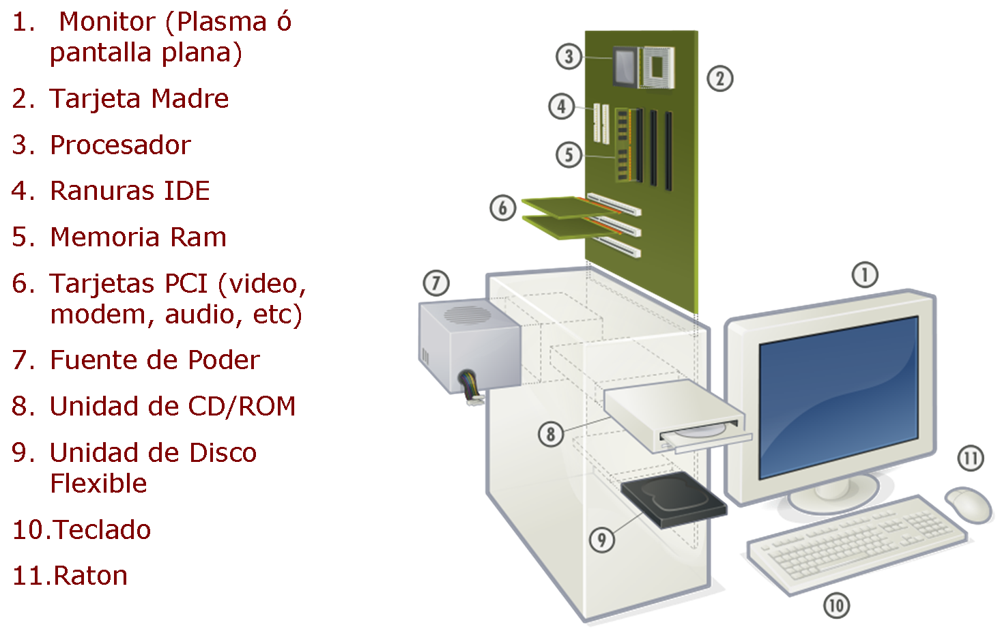
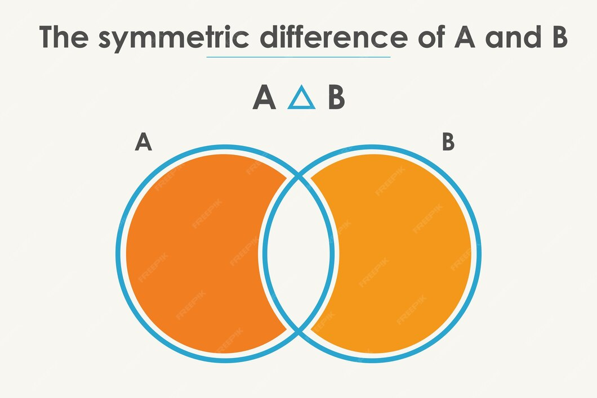
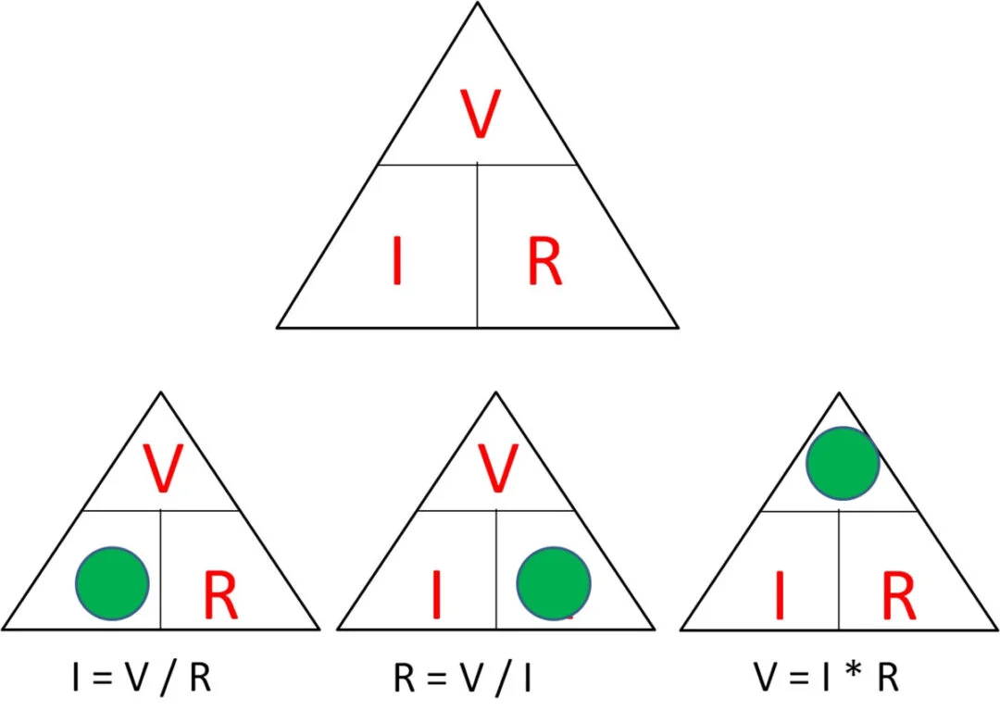
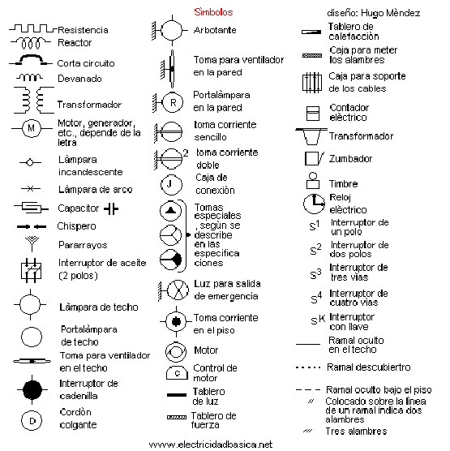

Esto es una página de un proyecto para mis clases de experiencia de usuario (Diseño web). Espero que con esto pueda ayudar a las personas a saber más sobre esta rama. Y contar mi experiencia y la de algunos conocidos estudiando esto, pero esto es más que nada, esto esta inspirado en los vlogs que habían en los 2000s.
El mundo de la informática estos últimos años ha evolucionado a pasos agigantados... y que como el mundo va avanzando tanto las personas que estudian estas áreas tienen que avanzar junto a ella.
La Introducción, o cosas que usted ha de saber antes de iniciar en la tecnología son varias cosas:
Estos son algunos temas los que hay en informatica, explicados de manera muy simple. Y teneindo las referencias, que de momento puedo decir.
En programación darán varias cosas: variables, Strings, Arrays, int, double, char, float, etc.
// Rifa 2, lo mismo solo que con Array
import java.util.ArrayList;
java.util.Scanner;
public class Rifas2 {
public static void main(String[] args) {
scanner = new Scanner(System.in);
ArrayList<String> nombres = new ArrayList<>(10);
int[] numeros = new int[10];
for (int i = 0; i < 10; i++) {
System.out.print("Dame tu nombre: ");
String nombre = scanner.nextLine();
nombres.add(nombre);
System.out.print("Elige un número del 1 al 10: ");
int numero = scanner.nextInt();
scanner.nextLine();
numeros[i] = numero;
}
indiceGanador = (int)(Math.random() * nombres.size());
int numeroGanador = numeros[indiceGanador];
System.out.println("El número ganador es: " + numeroGanador);
System.out.println("Felicidades, " + nombres.get(indiceGanador));
scanner.close();
}
}
En la materia de soporte se ven partes, funciones y otras cosas de las computadoras...
En lógica los temas que tuvimos fueron: diseño lógico de circuitos, diferencia simétrica, relaciones, funciones, gráficas compuestas, grafos, recursión, etc.
Lo que vimos en electrónica fue principalmente: diagramas, ley de Ohm, circuitos, conductores, entre otros.
Explicación y ejemplo de algunos:
 Puedo decir que ha sido un curso bastante interesante, donde eprendes constantemente temas muy interesantes... lo principalmente malo que podriamos decir es que; la carga horaria que hay es bastante pesada.
Tambien podemos decir que en esta área de la de que estamos constantemente aprendiendo, podremos apliar la mayoria de las cosas aprendidad en el área laboral.
Proyecto creado por la alumna María Villamil. Con la intención de informar, y que las personas interesadas en estudiar informatica, puedan tener algunos puntos y referencias de lo que estudiamos.
Mil gracias